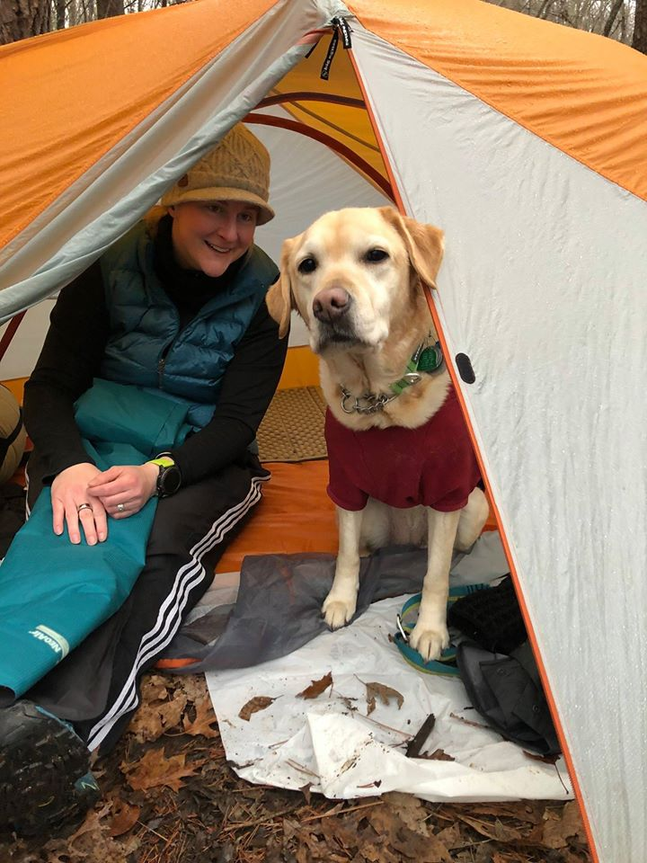
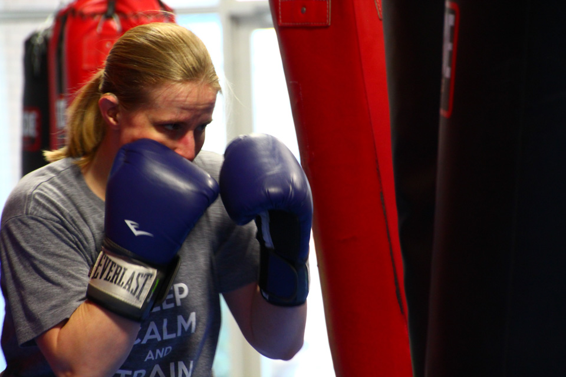
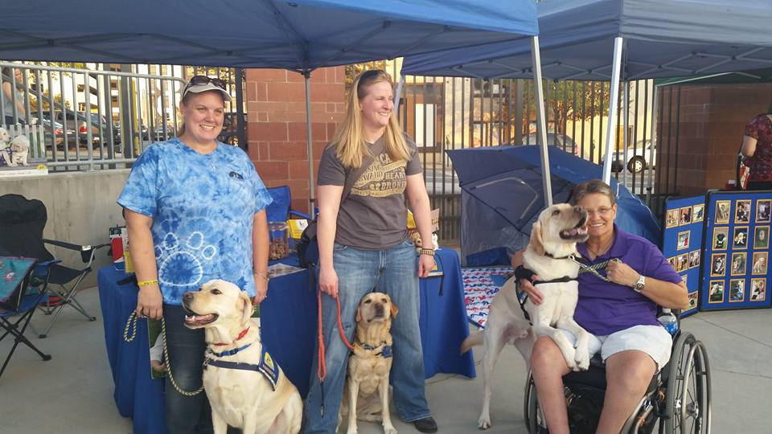
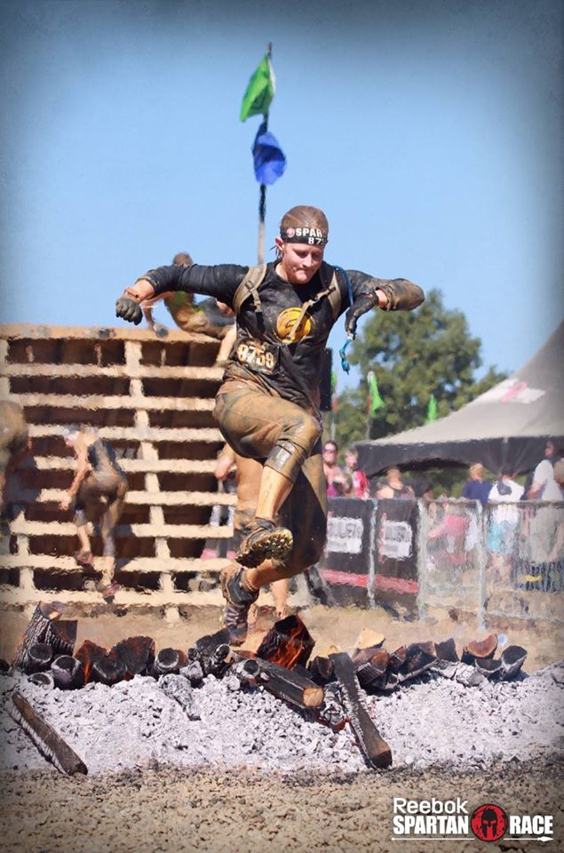

Here are a few things that I like to do in my spare time...

Fig.1 - Backpacking and camping with my dog, and family, is one of my favorite things to do.

Fig.2 - Alternative ways to work out are the way I go about exercising whenever I can. Treadmills are not for me.Fig.3 - I love to do photography!

Fig.4 - Volunteering my time for Canine Companions for Independence, and other organizations is a privilege for me, and I enjoy it immensely.

Fig.5 - This is from my first Spartan Race where I jumped over the fire obstacle to complete the race.